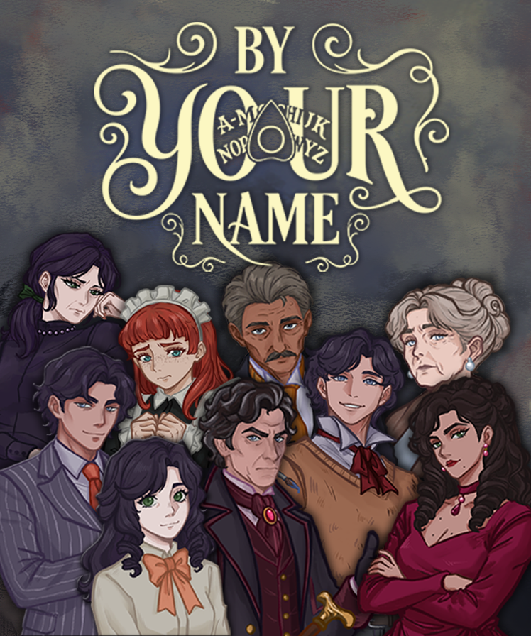

контента и систем в производстве

IN DEVELOPMENT
PC · 2027
PC · 2027
FLAGSHIP PROJECT / 01
BY YOUR
NAME
Нелинейный психологический триллер о проклятом особняке, пяти потерянных душах и именах, которые почти исчезли вместе с прошлым.
ПлатформаWindows PC
РежимSingle-player
Языки8
Релиз2027
Игрок исследует дом в собственном порядке, находит личные предметы, восстанавливает чужие воспоминания и получает формы с уникальными способностями. Решения в исследовании и пошаговых столкновениях меняют доступные пути к финалу.
BY YOUR NAME / PUBLISHER SNAPSHOTОдна игра.
Одна игра.
Пять форм.
Один план.
Текущая производственная картина и целевой сценарий из издательского питчдека. Финансовые значения ниже — не достигнутые результаты, а план команды.
участников основной команды
персонажей и наборов способностей
языков запланировано на релиз
ЦЕЛЕВОЙ СЦЕНАРИЙ · НЕ ФАКТИЧЕСКАЯ ВЫРУЧКА
FEB 2027целевой релиз
$8.99базовая цена
20Kкопий за 12 месяцев
до $180Kваловая Steam-выручка до комиссий, скидок и налогов
$35Kинвестиционный запрос
03 / ПРОЕКТЫ И ПРОИЗВОДСТВО
DIGITAL / PUBLISHED / 2026
BARYS
BALA
Двуязычная образовательная игра для детей: четыре типа заданий, озвучка на казахском и русском, персонаж-проводник и система звёзд. В портфолио Элины отмечена как web/digital-проект с продуктовой страницей и айдентикой.
PRODUCTION / CURRENT
ПРОТОТИПЫ,
3D И DIGITAL
Игровые и интерактивные прототипы, 2D/3D-графика, геймдизайн, сценарное проектирование, web-направление и обучение производственным пайплайнам.
UNITYUNREAL ENGINEGAMEMAKERMAYASUBSTANCE 3D
PROJECT ATLAS / 2023—2026
Поле
прототипов.
Собственные игры студии, ранние Borsyq-концепты и проекты стажёров, которые команда сопровождала от идеи до тестирования или публикации.
19 проектов SeeVerse Studio · 2023—2026
By Your Name
Нелинейный психологический триллер, выросший из студенческой джемовской идеи: пять форм, арена 6×6, восемь языков.
PC / STEAM2027
Barys Bala
Билингвальная обучающая игра 4+ для iPhone и iPad. В персональном портфолио Элины — продуктовая web-страница и айдентика проекта.
IOS · FAMILYApp Store ↗
Deadland Drifters
Выживание на автомобилях против зомби: web-версия как первый этап, PC-версия — как расширение.
WEB → PCSURVIVAL
Phantom Photo
Мобильный horror-tour о журналисте, телефоне, который видит призраков, и историях большого города.
MOBILESERPENT'S EYE
Steel Hoof
Мобильный 2D survival roguelike: лошадь сражается с ордами оборотней и усиливается в процедурных забегах.
MOBILEROGUELIKE
SoulPet
Эмоциональный тамагочи и дневник настроения. Четыре ежедневных вопроса влияют на характер и судьбу питомца.
GODOT / ANDROIDПУБЛИКАЦИЯ
Ashline
Раннер об огненном слайме в заброшенной шахте; в команде разработки Шермухаммед как 3D-художник.
UNITY / ANDROIDТЕСТИРОВАНИЕ
Roll a Cat
3D-платформер о коте-шаре, сладких полянах, врагах и восстановлении разрушенной кофейни.
ANDROID3D ARCADE
Pawzzle
Классическая головоломка с передвижными плитками и возрастающей сложностью.
UNITY / ANDROIDПУБЛИКАЦИЯ
Meo Match
Яркая match-3 игра о котиках; куратор и геймдизайнер проекта — Матвей Сеселкин.
UNITY / ANDROIDТЕСТИРОВАНИЕ
Krill Kill
Аркадный экшен-шутер о крошечной креветке с лазерной пушкой.
GAMEMAKER / ANDROIDТЕСТИРОВАНИЕ
Broken
Платформер о выжившем космонавте на Луне; опубликован и продолжает дорабатываться.
GAMEMAKER / ANDROIDОПУБЛИКОВАН
Deep Dive
Проект практики Trails, опубликованный в коллекции GameDev Center.
TRAILSITCH.IO
Link Bots: Escape
Командный проект Trails, опубликованный командой Link Bots.
TRAILSITCH.IO
Bullet Fate
Командный проект Trails, опубликованный на itch.io.
TRAILSITCH.IO
In Oblivion: Redemption v7
Командный проект Trails, опубликованный командой Dev5.
TRAILSITCH.IO
Slash ’n’ Swarm v5.0
Командный проект Trails, опубликованный на itch.io.
TRAILSITCH.IO
Games making Games
Образовательный проект Trails, опубликованный на itch.io.
TRAILSITCH.IO
AstanaVis Bro
Командный хакатонный web-проект, опубликованный на iDos Games. Отдельная джемовская работа команды, не кураторская программа.
WEB / HACKATHONИграть ↗
Ничего не найдено — попробуйте другой запрос или фильтр.
Статусы зафиксированы по рабочим Canva-презентациям команды; они отражают состояние проекта на дату соответствующего отчёта и могут изменяться.
ГАЛЕРЕЯ СТУДИИ / CANVA + ПОРТФОЛИО
Галерея
студии.
Питчдеки, игровые концепты, отчётные слайды, командные снимки и 3D-работы. Нажмите на любой кадр, чтобы рассмотреть его крупнее.
Здесь будут фотографии команды.